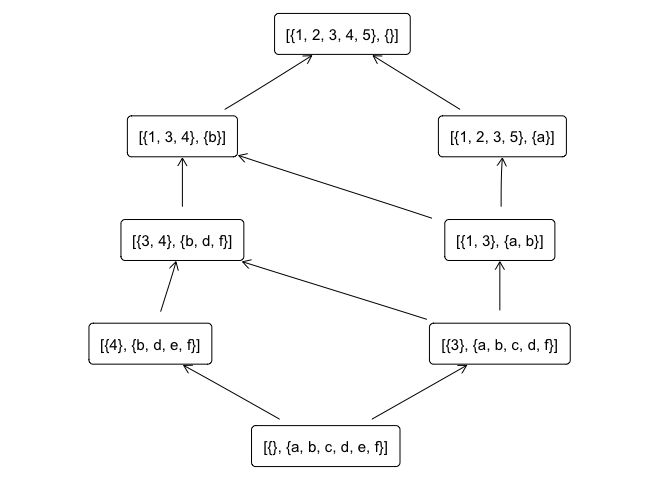

The goal of fcaR is to provide FCA tools inside the R environment.
Example in Fuzzy Formal Context
Example from here
library(fcaR)
# Table 2 in the paper
objects <- paste0("O", 1:6)
n_objects <- length(objects)
attributes <- paste0("P", 1:6)
n_attributes <- length(attributes)
I <- matrix(data = c(0, 1, 0.5, 0, 0, 0.5,
1, 1, 0.5, 0, 0, 0,
0.5, 1, 0, 0, 1, 0,
0.5, 0, 0, 1, 0.5, 0,
1, 0, 0, 0.5, 0, 0,
0, 0, 1, 0, 0, 0),
nrow = n_objects,
byrow = FALSE)
colnames(I) <- attributes
rownames(I) <- objects
print(I)
#> P1 P2 P3 P4 P5 P6
#> O1 0.0 1.0 0.5 0.5 1.0 0
#> O2 1.0 1.0 1.0 0.0 0.0 0
#> O3 0.5 0.5 0.0 0.0 0.0 1
#> O4 0.0 0.0 0.0 1.0 0.5 0
#> O5 0.0 0.0 1.0 0.5 0.0 0
#> O6 0.5 0.0 0.0 0.0 0.0 0# By default, the set of grades are the unique
# values in the (fuzzy) formal context
# Let us build the FormalContext object
fc <- FormalContext$new(I)
# Compute all concepts
concept_list <- fc$compute_concepts()
# And plot the concept lattice
fc$plot_lattice()
We can also extract implications from the formal context:
# Extract implications
fc$extract_implications_concepts()
# Which implications have been extracted
fc$implications
#> Implication set with 12 implications.
#> Rule 1: {P6 [0.5]} -> {P1 [0.5], P2 [0.5], P6}
#> Rule 2: {P5 [0.5]} -> {P4 [0.5]}
#> Rule 3: {P3 [0.5], P4 [0.5], P5 [0.5]} -> {P2, P5}
#> Rule 4: {P3 [0.5], P4} -> {P3}
#> Rule 5: {P2 [0.5], P4 [0.5]} -> {P2, P3 [0.5], P5}
#> Rule 6: {P2 [0.5], P3 [0.5]} -> {P2}
#> Rule 7: {P2, P3, P4 [0.5], P5} -> {P4}
#> Rule 8: {P1 [0.5], P4 [0.5]} -> {P1, P2, P3, P4, P5, P6}
#> Rule 9: {P1 [0.5], P3 [0.5]} -> {P1, P2, P3}
#> Rule 10: {P1 [0.5], P2} -> {P1}
#> Rule 11: {P1, P2 [0.5]} -> {P2}
#> Rule 12: {P1, P2, P3, P6} -> {P4, P5}
# Reduce the number of implications using two simple
# rules. The algorithm applies the specified rules
# in batches, if the number of rules is high.
fc$implications$apply_rules(rules = c("composition",
"generalization"))
#> Using parallel execution
#> Processing batch
#> --> composition : from 12 to 12 in 0.009 secs.
#> --> generalization : from 12 to 12 in 0.01 secs.
#> Batch took 0.02 secs.
# Reduced set of implications
fc$implications
#> Implication set with 12 implications.
#> Rule 1: {P6 [0.5]} -> {P1 [0.5], P2 [0.5], P6}
#> Rule 2: {P5 [0.5]} -> {P4 [0.5]}
#> Rule 3: {P3 [0.5], P4 [0.5], P5 [0.5]} -> {P2, P5}
#> Rule 4: {P3 [0.5], P4} -> {P3}
#> Rule 5: {P2 [0.5], P4 [0.5]} -> {P2, P3 [0.5], P5}
#> Rule 6: {P2 [0.5], P3 [0.5]} -> {P2}
#> Rule 7: {P2, P3, P4 [0.5], P5} -> {P4}
#> Rule 8: {P1 [0.5], P4 [0.5]} -> {P1, P2, P3, P4, P5, P6}
#> Rule 9: {P1 [0.5], P3 [0.5]} -> {P1, P2, P3}
#> Rule 10: {P1 [0.5], P2} -> {P1}
#> Rule 11: {P1, P2 [0.5]} -> {P2}
#> Rule 12: {P1, P2, P3, P6} -> {P4, P5}
# We can obtain the support of both implications and concepts
fc$get_implication_support()
#> [1] 0.1666667 0.3333333 0.1666667 0.0000000 0.1666667 0.3333333 0.0000000
#> [8] 0.0000000 0.1666667 0.1666667 0.1666667 0.0000000
fc$get_concept_support()
#> [1] 1.0000000 0.5000000 0.3333333 0.1666667 0.1666667 0.1666667 0.0000000
#> [8] 0.5000000 0.3333333 0.3333333 0.1666667 0.0000000 0.5000000 0.3333333
#> [15] 0.3333333 0.1666667 0.1666667 0.0000000 0.5000000 0.3333333 0.1666667
#> [22] 0.1666667 0.1666667 0.0000000 0.1666667 0.0000000Example in Crisp Formal Context
library(fcaR)
# Define objects and attributes
objects <- paste0(1:5)
n_objects <- length(objects)
attributes <- letters[1:6]
n_attributes <- length(attributes)
# The formal context is just a simple matrix
I <- matrix(data = c(1, 1, 1, 0, 1,
1, 0, 1, 1, 0,
0, 0, 1, 0, 0,
0, 0, 1, 1, 0,
0, 0, 0, 1, 0,
0, 0, 1, 1, 0),
nrow = n_objects,
byrow = FALSE)
colnames(I) <- attributes
rownames(I) <- objects
print(I)
#> a b c d e f
#> 1 1 1 0 0 0 0
#> 2 1 0 0 0 0 0
#> 3 1 1 1 1 0 1
#> 4 0 1 0 1 1 1
#> 5 1 0 0 0 0 0# By default, the set of grades are the unique
# values in the (fuzzy) formal context
# Let us build the FormalContext object
fc <- FormalContext$new(I)
# Compute all concepts
concept_list <- fc$compute_concepts()
# And plot the concept lattice
fc$plot_lattice()
We can also extract implications from the formal context:
# Extract implications
fc$extract_implications_concepts()
# Which implications have been extracted
fc$implications
#> Implication set with 5 implications.
#> Rule 1: {f} -> {b, d}
#> Rule 2: {e} -> {b, d, f}
#> Rule 3: {d} -> {b, f}
#> Rule 4: {c} -> {a, b, d, f}
#> Rule 5: {a, b, d, f} -> {c}
# Reduce the number of implications using two simple
# rules. The algorithm applies the specified rules
# in batches, if the number of rules is high.
fc$implications$apply_rules(rules = c("composition",
"generalization"))
#> Using parallel execution
#> Processing batch
#> --> composition : from 5 to 5 in 0.004 secs.
#> --> generalization : from 5 to 5 in 0.007 secs.
#> Batch took 0.019 secs.
# Reduced set of implications
fc$implications
#> Implication set with 5 implications.
#> Rule 1: {f} -> {b, d}
#> Rule 2: {e} -> {b, d, f}
#> Rule 3: {d} -> {b, f}
#> Rule 4: {c} -> {a, b, d, f}
#> Rule 5: {a, b, d, f} -> {c}
# We can obtain the support of both implications and concepts
fc$get_implication_support()
#> [1] 0.4 0.2 0.4 0.2 0.2
fc$get_concept_support()
#> [1] 1.0 0.6 0.4 0.2 0.8 0.4 0.2 0.0